Channel Identification Machines
This demo illustrates a formal methodology for identifying a channel in a system consisting of a communication channel in cascade with an asynchronous sampler. In particular, the channel is modeled as a multidimensional filter, while models of asynchronous sampler are taken from neuroscience and communications and includes integrate-and-fire (IAF) neurons, asynchronous delta-sigma modulators (ASDM), and general oscillators in cascade with zero-crossing detectors.
The code below reproduces results presented in [1] and can be used to generate Figs. 5-9 and Figs. 11-13 in [1]. The employed filter was taken from [2].
The code is structured as follows. First, we present a step-by-step demo of Fig.5: (1) encode input signals (2) specify filter(s) (3) filer input signal(s) (4) encode filter output using an asynchronous sampler (5) identify the filter(s)
We provide the code for each step together with the code for plotting the results. Then we declare functions for each of the above steps and package these functions into a MATLAB class 'cim_utility' for repetitive usage. The script for reproducing Figs. 6-9 and Figs. 11-13 is contained in that MATLAB class.
- Author: Yevgeniy B. Slutskiy ys2146@columbia.edu
- Revision Author: Chung-Heng Yeh chyeh@ee.columbia.edu
- Bionet Group, Columbia University
- Copyright 2012-2014 Yevgeniy B. Slutskiy and Chung-Heng Yeh
Contents
- Initialize the demo
- Specify the Ideal IAF neuron
- Create the band-limited Stimulus
- Specify the filter h to be used
- Compute the projection Ph onto the RKHS
- Filter the input signal
- Encode the filter output with an IAF neuron
- Recover the filter
- Reproduce Fig.5 of [1]
- Reproduce Fig.6 of [1]
- Reproduce Fig.7 of [1]
- Reproduce Fig.8 of [1]
- Reproduce Fig.9 of [1]
- Reproduce Fig.11 of [1]
- Reproduce Fig.12 of [1]
- Reproduce Fig.13 of [1]
- Reference
Initialize the demo
clc; clear all; close all; % reset the MATLAB workspace set(0,'defaulttextinterpreter','Latex'); % set the default text interpreter to latex addpath('../../cim'); % set the default path of CIM functions tic_demo = tic; % start the demo timer tic_fig5 = tic; % start the demo timer for Fig. 5
Define function handles for repetitive usage
e_l = @(m,t,L,W,T) exp(1j*m*W/L*t)/sqrt(T); % declare basis of the RKHS of trigonometric polynomials filter = @(t,T1,T2,a) (t>=T1 & t<T2).*(3*a*exp(-a*t)... % the filter taken from [2] .*((a*t).^3/factorial(3)-(a*t).^5/factorial(5))); tri_ker = @(t,L,W,T) (2*L+1)/T*sinc((2*L+1)*W/(2*L)*t/pi)... % kernel of the RKHS ./sinc(W/(2*L)*t/pi);
Specify the Ideal IAF neuron
delta = 0.005; % set the threshold bias = 0.3; % set the bias kappa = 1; % set the capacitance sigma_delta = 0; % set the variance of random thresholds
Create the band-limited Stimulus
Fix the state of randn() and rand() explicitly to ensure reproducible results.
randn('state', 27111987); rand('state', 19550206)
Specify the order L and bandwidth W for the space of trigonometric polynomials
L = 5; % set the order of the space (number of exponentials) f = 25; % set the input signal bandwidth, [Hz] W = 2*pi*f; % calculate the bandwidth in radians T = 2*pi*L/W; % calculate the period of the input signal
Synthesize an input signal u(t) from random coefficients u_l, l=-L,...,L. Note that u is defined on an interval [-T/2, T/2]. However, MATLAB assumes that the signal is defined on [0,T] when using the Fourier transform. To fix this, ifftshift is used to get the correct result. Since the signal u(t) is real, u_{-l} = conj(u_l), i.e., positive Fourier coefficients are complex conjugates of the negative coefficients and the zero-frequency, or DC term, is real (fundamental result of the Fourier transform).
dt = 1e-5; % set the time step, [s] t = -T/2:dt:T/2; % set the time course of the signal u_l = (randn(1,2*L+1)+1i*randn(1,2*L+1)); % generate random signal coefficients u_l(:,1:L) = conj(u_l(:,end:-1:end-L+1)); % u_{-l} = conj(u_l) u_l(:,L+1) = randn(1,1); % DC-term is real u_l_pad = [u_l(L+1:end) zeros(1,numel(t)-2*L-1) u_l(1:L)]; % set the frequency component outside bandwidth to zero u = real(ifftshift(ifft(u_l_pad)))/sqrt(T)*numel(t); % synthesize the signal using inverse Fourier transform u = u/max(abs(u)); % normalize the signal
Specify the filter h to be used
Generate a filter h according to Adelson and Bergen [2]. h has a temporal support on the interval [T1, T2] with T2-T1<T. However, since the filter projection is periodic with period T, the filter is defined on [-T/4, 3*T/4] with zero response outside [T1, T2] for comparison purposes.
T1 = 0; T2 = 0.1; % specify T1 and T2 a = 200; % set the filter parameter t_filt = -T/4:dt:T*3/4; % set the time course of the filter, [s] h = filter(t_filt,T1,T2,a);
Compute the projection Ph onto the RKHS
Generate the reproducing kernel for the space of trigonometric polynomials (see Def. 1 in [1]). Since functions in the RKHS are periodic, use the circular convolution to compute Ph
K = tri_ker(t_filt-t_filt(1),L,W,T); % get the reproducing kernel Ph = dt*cconv(h,K,numel(t_filt)); % find Ph by convolving h with K
Plot the filter h and its projection Ph.
figure('Color','White','Position',[0 0 1000 800]); plot(t_filt,h,'--k',t_filt,Ph,'r'); xlabel('Time, [s]');ylabel('Amplitude');xlim([t_filt(1) t_filt(end)]); title('Filter and its projection'); legend('$h$','$\mathcal{P}h$')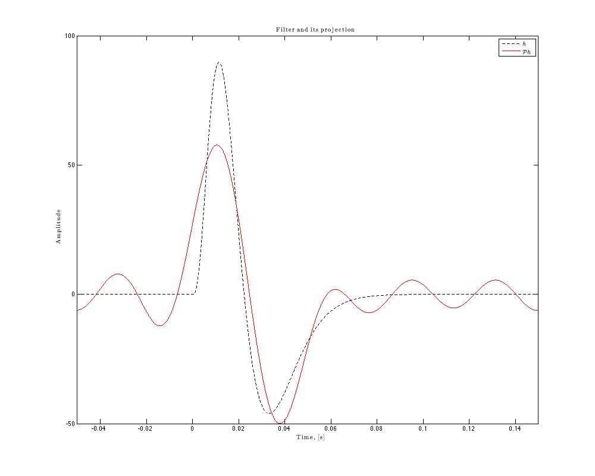
Filter the input signal
Similarly, use circular convolution to comptue the filter output. Use only the causal part of the filter.
v = dt*cconv(h(t_filt>=0),u,numel(u)); % convolve u with h
Plot the input signal and the filter output.
figure('Color','White','Position',[0 0 1000 800]); subplot(2,1,1); plot( t-t(1), u ); ylabel('Amplitude');xlim([0 t(end)-t(1)]);set(gca,'xticklabel',[]); title('(a)$\qquad$Input signal u(t)'); legend(['$\Omega = 2\pi\cdot$' num2str(f) 'rad/s, $L = ' num2str(L) '\quad$'],... 'location','East'); subplot(2,1,2); plot( t-t(1), v ); ylabel('Amplitude');xlim([0 t(end)-t(1)]);xlabel('Time, [s]') title('(b)$\qquad$Filter Output v(t)');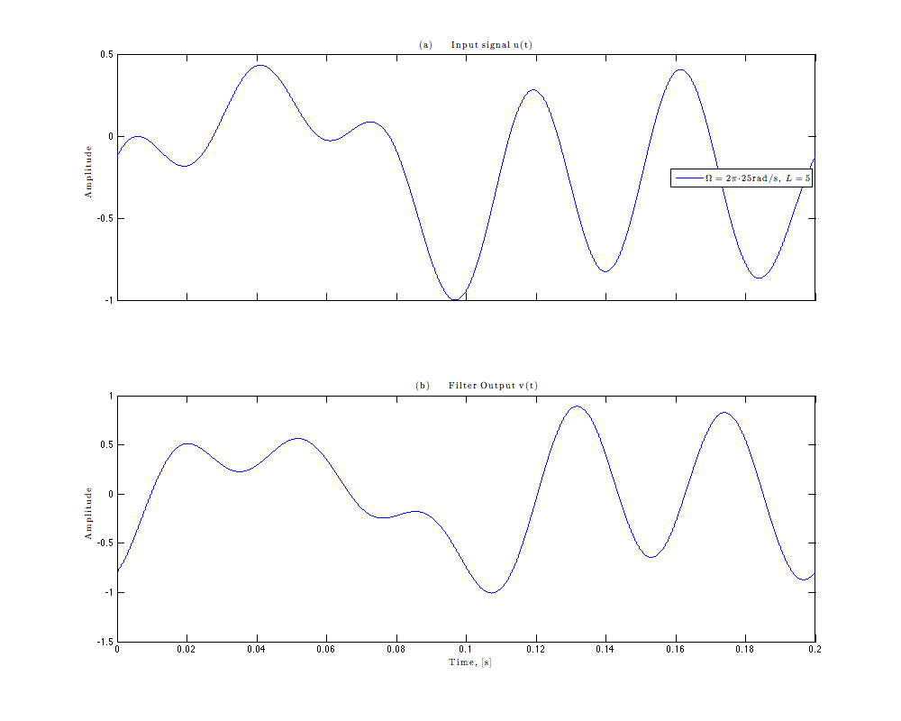
Encode the filter output with an IAF neuron
The integrate-and-fire (IAF) neuron is used as an instance of an asynchronous sampler, and exemplifies the encoding process in which the filter output is encoded into a spike sequence. Although the threshold is constant in this case, a more general implementation with random thresholds is provided below.
spikes = zeros(size(t)); % allocate a vector for the spike train voltage = zeros(size(t)); % allocate a vector for the membrane voltage delta_v = delta + sigma_delta*randn(); % allocate a vector for random thresholds voltage(1) = 0.9*delta_v*rand(); % initialize the membrane voltage
Perform numerical integration using the trapezoidal method.
for i = 2:numel(t) % update the membrane voltage voltage(i) = voltage(i-1) + dt/kappa*(bias+0.5*(v(i)+v(i-1))); % if above threshold if voltage(i) >= delta_v(end) voltage(i) = 0; % reset the membrane voltage spikes(i) = 1; % record spike delta_v = [delta_v delta+sigma_delta*randn()]; % get a new random threshold end end
Plot the encoding result.
figure('Color','White','Position',[0 0 1000 800]); subplot(311); plot(t-t(1),u); ylabel('Amplitude');xlim([0 t(end)-t(1)]);set(gca,'xticklabel',[]); title('(a)$\qquad$Input signal u(t)'); legend(['$\Omega = 2\pi\cdot$' num2str(f) 'rad/s, $L = ' num2str(L) '\quad$'],... 'location','East'); subplot(312); plot(t-t(1), voltage,'-b'); hold on; plot( [0 t(end)-t(1)], delta*ones(1,2),'--r'); hold on; plot(t(logical(spikes))-t(1), delta_v(1:end-1),'or',... 'linewidth', 1, 'markersize',6, 'markerfacecolor','r'); ylabel('Membrane Potential');set(gca,'xticklabel',[]); title('(b)$\qquad$Integrator output vs. Time'); legend('$\int_{t_k}^{t}(u\ast h)(s)ds,\,\forall k\qquad$',... ['$\delta = ' num2str(delta) '$'], ... '$\int_{t_k}^{t}(u\ast h)(s)ds=\delta$','Location','southeast'); axis([0 t(end)-t(1) -0.1*delta 1.2*delta]); subplot(313); stem(t(spikes==1)-t(1), 1.1*ones(size(find(spikes==1))), '^k', 'filled'); box on; set(gca,'yticklabel',[],'ytick',[]); title('(c)$\qquad$IAF spike train for u(t)'); xlabel('Time, [s]'); axis([0 t(end)-t(1) 0 1.2]); legend(['Spikes, $n = ' num2str(sum(spikes),'%3.0f') '\quad$'],... 'Location','East');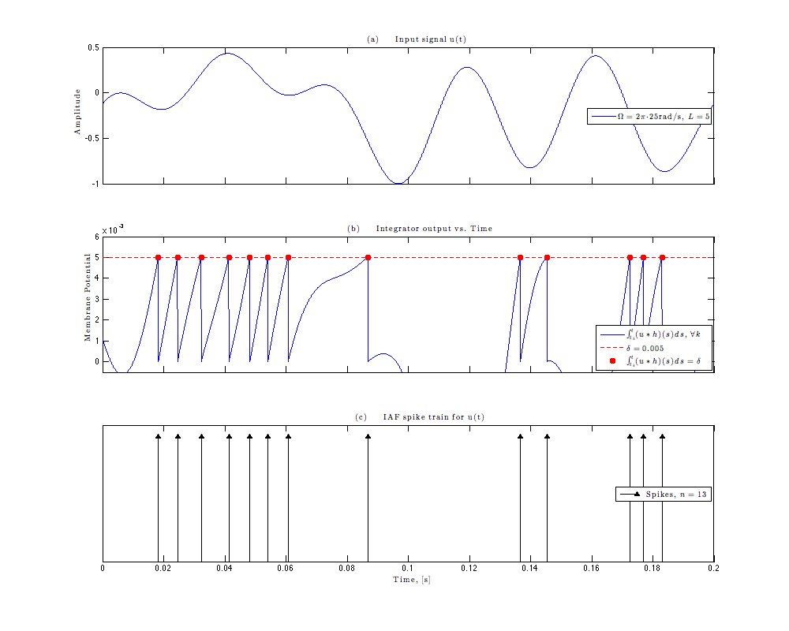
Recover the filter
The identification algorithm is based on Lemma 1 and Lemma 2 in [1]. The notation follows [1].
tk = t(spikes==1)'; % get the spike times total_spikes_used = numel(tk)-1; % compute the number of spikes used for identification
Compute the measurement vector q (see Sec. 3.1 in [1]).
q = kappa*delta - bias*diff(tk); % Eq.(2) in [1]
Compute the Phi matrix. Since u_{-l} = conj(u_l) for real signals, only half of the matrix needs to be computed. Note that 'l' in Eq.(7) is replaced by 'm' to avoid confusion between '1' and 'l'.
Phi = zeros(total_spikes_used,2*L+1); % allocate Phi matrix u_l = fft(u)*sqrt(T)/numel(u); % reconstruct the signal coefficients for m=-L:0 if m == 0 Phi(:,L+1) = u_l(1)*diff(tk); % the DC component else Phi(:,m+L+1) = u_l(end+m+1)*sqrt(T)/(1j*m*W/L)*... (e_l(m,tk(2:end),L,W,T)-e_l(m,tk(1:end-1),L,W,T)); end end Phi(:,L+2:end) = conj(Phi(:,L:-1:1));
Recover the h vector by multiplying the pseudo inverse of Phi with q. A cutoff of 1e-9 is set to eliminate infinitesimal singular values.
bold_h = transpose(pinv(Phi,1e-9)*q); % Note that bold_h is a column vector
Reconstruct the projection of the filter Ph. The reconstruction algorithm is based on the inverse Fourier transform, and is similar to what has been shown for generating an input signal. For convenience, the reconstruction algorithm is implemented as a function.
h_rec = cim_utility.synthesizeSignal(t,t_filt,bold_h,L,T);
Reproduce Fig.5 of [1]
The script for plotting Fig. 5 of [1] is wrapped in a function to save space.
figure('Color','White','Position',[0 0 1000 800]); cim_utility.plotPaperFig(T1,T2,T,f,W,L,bias,delta,sigma_delta,dt,t_filt,... h,Ph,t,u,v,spikes,voltage,{delta_v},h_rec,total_spikes_used);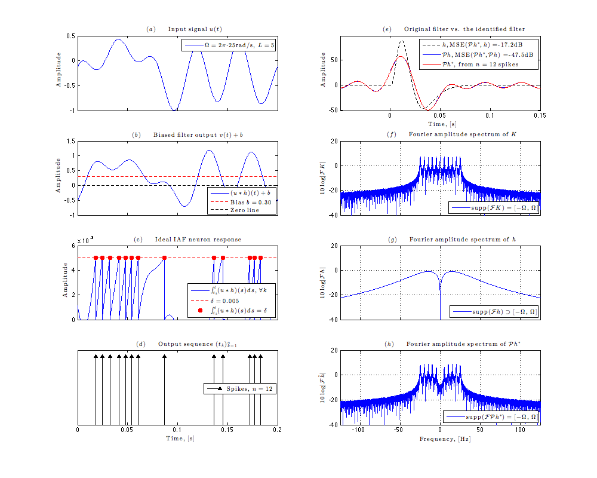
Get running time for Fig.5.
cim_utility.runtime('Running time for Fig. 5: ', toc(tic_fig5));
Running time for Fig. 5: 0' 14.2"
Reproduce Fig.6 of [1]
Next, we demonstrate the identification of the filter projected onto the RKHS with bandwidth f=100Hz and order L=20.
tic_fig6 = tic; % start the demo timer for Fig. 6
Fix the state of randn() and rand() explicitly to ensure reproducible results.
randn('state', 27111987); rand('state', 19550206);
Generate the input signals.
L = 20; % set the order of the space (number of basis) f = 100; % set the input signal bandwidth, [Hz] W = 2*pi*f; % calculate the bandwidth in radians T = 2*pi*L/W; % calculate the period of the input signal n = 4; % set the number of input signals dt = 1e-5; % set the time step, [s] t = -T/2:dt:T/2; % set the time course of the input signals, [s] u_l = randn(n,2*L+1)+1i*randn(n,2*L+1); % generate random signal coefficients u_l(:,1:L) = conj(u_l(:,end:-1:end-L+1)); % u_{-l} = conj(u_l) u_l(:,L+1) = randn(n,1); % make the DC-term real u = cim_utility.synthesizeSignal(t-t(1),t,u_l,L,T,'Normalize'); % synthesize the input signals
Create the filter and Compute the filter projection.
t_filt = -T/4:dt:T*3/4; % set the time course of the filter, [s] h = filter(t_filt,T1,T2,a); % create the filter K = tri_ker( t_filt-t_filt(1), L, W, T); % get the reproducing kernel K Ph = dt*cconv(h,K,numel(t_filt)); % find the projection Ph by convolving h with K
Filter the input signals.
v = zeros(size(u)); % allocate a matrix for the filter output for i=1:n v(i,:) = dt*cconv(h(t_filt>=0),u(i,:),numel(t)); % convolve each input signal with h end
Encode the filter output.
s = zeros(size(u)); % allocate a matrix for the spike train voltage = zeros(size(u)); % allocate a matrix for the membrane voltage delta_v = cell(n,1); % allocate a vector for random thresholds for i=1:n % encode the output of the filter using an ideal IAF neuron [s(i,:), voltage(i,:), delta_v{i}] = ideal_iaf_rt_encode(... v(i,:), t, bias, delta, kappa); end
Identify the filter.
[h_rec, total_spikes_used] = identify_h_ideal_iaf_trig(...
t, t_filt, u, W, L, bias, delta, kappa, s);
Number of spikes needed: 42 Number of spikes used: 48
Generate Fig.6 of [1].
figure('Color','White','Position',[0 0 1000 800]); cim_utility.plotPaperFig(T1,T2,T,f,W,L,bias,delta,sigma_delta,dt,t_filt,... h,Ph,t,u,v,s,voltage,delta_v,h_rec,total_spikes_used);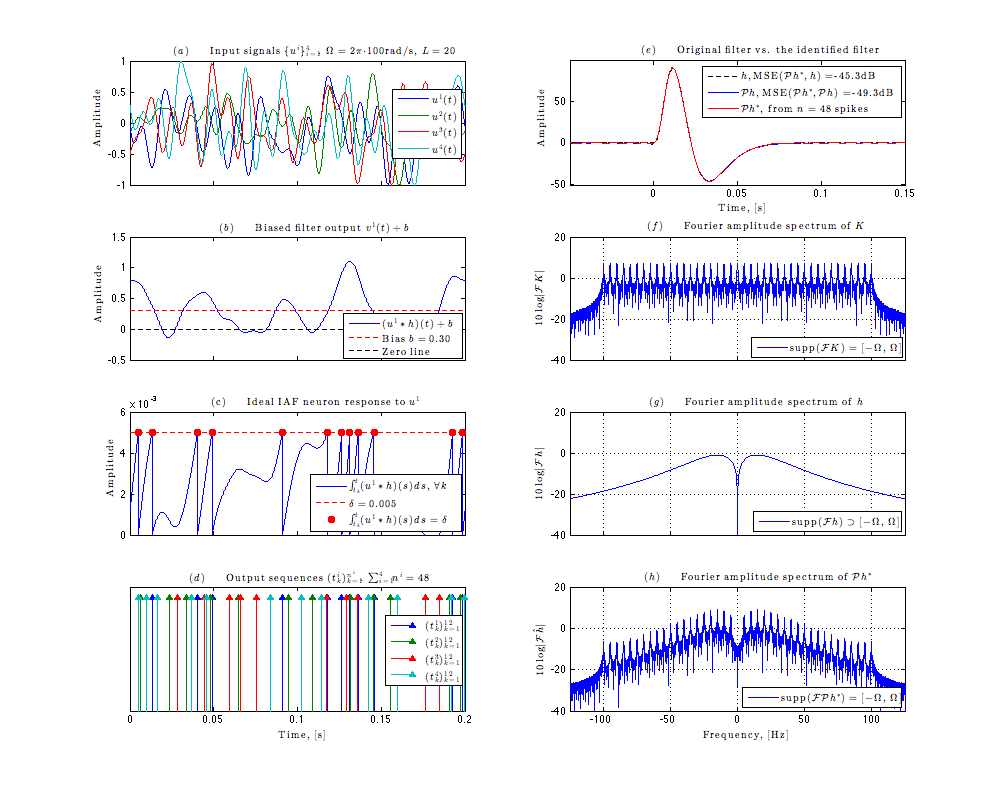
Get running time for Fig.6.
cim_utility.runtime('Running time for Fig. 6: ', toc(tic_fig6));
Running time for Fig. 6: 0' 11.6"
Reproduce Fig.7 of [1]
Now, we consider a special case when the channel does not alter the input signal, i.e., when the filter is the Dirac delta function.
tic_fig7 = tic; % start the demo timer for Fig. 7
Fix the state of randn() and rand() explicitly to ensure reproducible results.
randn('state', 19871127); rand('state', 19550206);
Generate the input signals.
L = 10; % set the order of the space (number of basis) f = 50; % set the input signal bandwidth, [Hz] W = 2*pi*f; % calculate the bandwidth in radians T = 2*pi*L/W; % calculate the period of the input signal n = 2; % set the number of input signals dt = 1e-5; % set the time step, [s] t = -T/2:dt:T/2; % set the time course of the input signals, [s] u_l = randn(n,2*L+1)+1i*randn(n,2*L+1); % generate random signal coefficients u_l(:,1:L) = conj(u_l(:,end:-1:end-L+1)); % u_{-l} = conj(u_l) u_l(:,L+1) = randn(n,1); % make the DC-term real u = cim_utility.synthesizeSignal(t-t(1),t,u_l,L,T,'Normalize'); % synthesize the input signals
Specify the filter as the Dirac delta fcuntion.
t_filt = -T/4:dt:T*3/4; % set the time course of the filter, [s] d = ( abs(t_filt) < dt/2 )/dt; % specify the filter as the Dirac delta function Ph = tri_ker( t_filt, L, W, T); % the filter projection is simply the kernel of the space
Filter the input signal. Since the filter is the Dirac delta function, the filter output is simply a copy of the input signal.
v = u; % set the filter output equal to the input
Encode the filter output.
s = zeros(size(u)); % allocate a matrix for the spike train voltage = zeros(size(u)); % allocate a matrix for the membrane voltage delta_v = cell(n,1); % allocate a vector for random thresholds for i=1:n % encode the output of the filter using an ideal IAF neuron [s(i,:), voltage(i,:), delta_v{i}] = ideal_iaf_rt_encode(... v(i,:), t, bias, delta, kappa); end
Identify the filter.
[h_rec, total_spikes_used] = identify_h_ideal_iaf_trig(...
t, t_filt, u, W, L, bias, delta, kappa, s);
Number of spikes needed: 22 Number of spikes used: 28
Generate Fig.7 of [1].
figure('Color','White','Position',[0 0 1000 800]); cim_utility.plotPaperFig(T1,T2,T,f,W,L,bias,delta,sigma_delta,dt,t_filt,... d,Ph,t,u,v,s,voltage,delta_v,h_rec,total_spikes_used);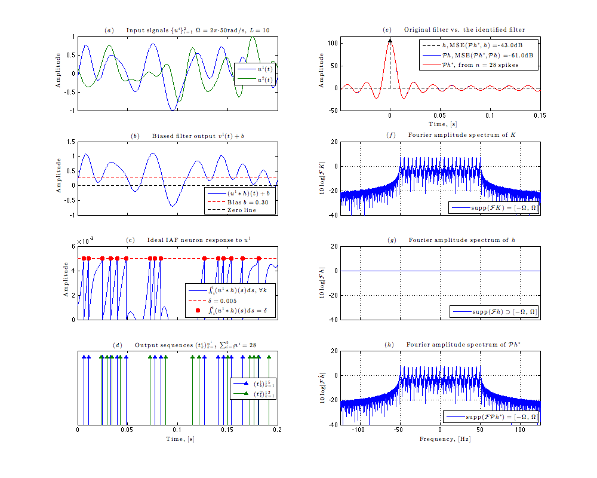
Get running time for Fig.7.
cim_utility.runtime('Running time for Fig. 7: ', toc(tic_fig7));
Running time for Fig. 7: 0' 11.0"
Reproduce Fig.8 of [1]
Now, we consider a circuit comprised of a channel in cascade with a nonlinear dynamical system that has a stable limit cycle. In particular, the employed nonlinear dynamic system belongs to the family of van der Pol oscillator.
tic_fig8 = tic; % start the demo timer for Fig. 8
Fix the state of randn() and rand() explicitly to ensure reproducible results.
randn('state', 19871127); rand('state', 19550206);
Generate the input signal.
L = 25; % set the order of the space (number of exponentials) f = 50; % set the input signal bandwidth, [Hz] W = 2*pi*f; % calculate the bandwidth in radians T = 2*pi*L/W; % calculate the period of the input signal n = 4; % set the number of input signals dt = 2e-6; % set the time step, [s] t = -T/2:dt:T/2; % set the time course of the input signals, [s] u_l = randn(n,2*L+1)+1i*randn(n,2*L+1); % generate random signal coefficients u_l(:,1:L) = conj(u_l(:,end:-1:end-L+1)); % the positive and negative component is conjugate to each other u_l(:,L+1) = randn(n,1); % set DC-term to real u = cim_utility.synthesizeSignal(t-t(1),t,u_l,L,T,'Normalize'); % synthesize the input signals
Create the filter and Compute the filter projection.
t_filt = -T/4:dt:T*3/4; % set the time course of the filter, [s] h = filter(t_filt,T1,T2,a); % create the filter K = tri_ker( t_filt-t_filt(1), L, W, T); % get the reproducing kernel K Ph = dt*cconv(h,K,numel(t_filt)); % find the projection Ph by convolving h with K
Filter the input signal.
v = zeros(size(u)); % allocate a matrix for the filter output for i=1:n v(i,:) = dt*cconv(h(t_filt>=0),u(i,:),numel(t)); % convolve each input signal with h end
Specify the van der Pol oscillator. Note that the oscillator parameters are specified with time unit as millisecond. As a result, the time course of the oscillator is converted from second to millisecond.
mu = 20; % set the dumping factor bias = 1; % set the bias % set the function handle for the system equation of the van der Pol oscillator van_der_pol = @(u,y) [mu*(u+bias)*(y(1)-1/3*y(1)^3-y(2)); (u+bias)*y(1)/mu];
Find the limit cycle of the employed van der Pol oscillator. In doing so, at each cycle, we record the 'spike' point on the phase plane, and compare the 'spike' point with the previous one. When the 'spike' point converges to a certain point, it implies that the system oscillates on a particular limit cycle.
spike_y = Inf(2,1); % initialize the spike point y = repmat([0.5; 0],1,3); % initialize the state variables of the oscillator counter = 0; % set the counter while abs(spike_y(1) - y(1,2)) > 1e-8 y(:,3) = y(:,2) + 1e3*dt*van_der_pol(0,y(:,2)); % update the state variables of the oscillator if y(1,1) < y(1,2) && y(1,2) > y(1,3) % spike detection spike_y = y(:,2); % record the spike point when spike detected period = counter; % record the period of the present cycle counter = 0; % reset the counter end y(:,1:2) = y(:,2:3); % pass the current states to post states counter = counter + 1; % increase the counter by 1 end lc = zeros(size(y,1),period); % allocate memory for the limit cycle lc(:,1) = spike_y; % set the 'spike' point of the limit cycle for i = 2:counter lc(:,i) = lc(:,i-1) + 1e3*dt*van_der_pol(0,lc(:,i-1)); % compute the limit cycle at each time step end
Encode the filter output using the van der Pol oscillator. We provide a generic nonlinear encoder in which the van der Pol oscillator is embedded. The van der Pol oscillator can be replaced by any other dynamic system which has a stable limit cycle and an analytic system equation.
y1 = zeros(n,numel(t)); % allocate memory for the first state variable y2 = zeros(n,numel(t)); % allocate memory for the second state variable s = zeros(n,numel(t)); % allocate memory for the spike sequence for i = 1:n rnd_init = lc(:,round(1 + period*rand)); % set the oscillator at a random point of the limit cycle % encode the filter output using the van der Pol oscillator [s(i,:), y1(i,:), y2(i,:)] = nonlinear_sys_encode(... v(i,:),1e3*t,van_der_pol,rnd_init); end
Identify the filter.
h_rec = identify_h_ideal_iaf_trig( t, t_filt, u, W, L, bias, period*dt, 1, s);
Number of spikes needed: 52 Number of spikes used: 56
Generate Fig. 8 of [1].
figure('Color','White','Position',[0 0 1000 800]); cim_utility.plotPaperFig8(T1,T2,T,f,W,L,mu,bias,dt,lc,... t_filt,h,Ph,t,u,v,y1,y2,s,h_rec);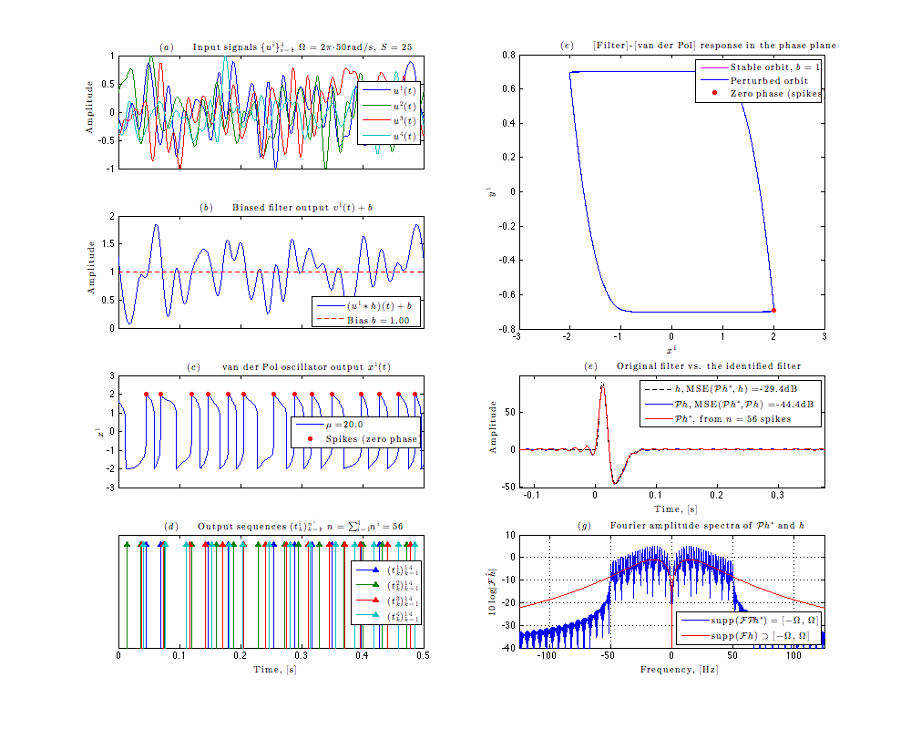
Get running time for Fig.8.
cim_utility.runtime('Running time for Fig. 8: ', toc(tic_fig8));
Running time for Fig. 8: 0' 48.4"
Reproduce Fig.9 of [1]
To provide intuition about the relationship between the filter and the filter projection, we compare the two in both time and frequency domains for several choices of the RKHS (different orders L and bandwidths W).
tic_fig9 = tic; % start the demo timer for Fig. 9
Specify the filter h to be used.
dt = 1e-5; % set the time step, [s] t_filt = -1:dt:1; % set the time course of the filter h = filter(t_filt,T1,T2,a); % get the filter
Compute the filter projection onto the RKHS for multiple values of bandwidth W and order L.
T = [0.2 0.5]; % set the period of the space f_v = [20 50 100]; % set the bandwidth of the space Ph_cell = cell(length(f_v), length(T)); % allocate a cell for Ph for i=1:numel(f_v) W = 2*pi*f_v(i); % calculate the bandwidth in radians for j = 1:numel(T) L = f_v(i)*T(j); % set the order of the space K = tri_ker(t_filt,L,W,T(j)); % get the reproducing kernel K Ph_cell{i,j} = dt*cconv( h, K, numel(t_filt) ); % compute the filter projection onto the kernel end end
Generate Fig.9 of [1].
figure('Color','White','Position',[0 0 1000 800]); cim_utility.plotPaperFig9(t_filt,dt,h,Ph_cell,f_v,T);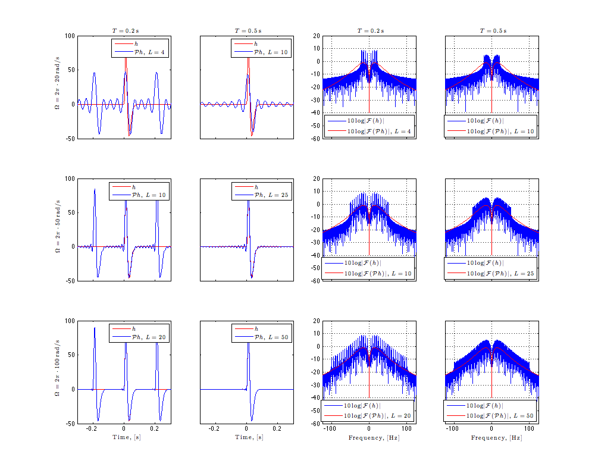
Get running time for Fig.9.
cim_utility.runtime('Running time for Fig. 9: ', toc(tic_fig9));
Running time for Fig. 9: 0' 30.6"
Reproduce Fig.11 of [1]
We now demonstrate the channel identification for a MISO circuit consisting of three filters in cascade with an asynchronous sigma-delta modulator.
tic_fig11 = tic; % start the demo timer for Fig. 11
Fix the state of randn() and rand() explicitly to ensure reproducible results.
randn('state', 19871127); rand('state', 19550206);
Set the parameters of IAF neuron.
delta = 0.0025; % set the Schmitt trigger threshold bias = 0.9; % set the bias kappa = 1; % set the integrator capacitance
Generate the input signals. Five sets of input signal are randomly generated. Each set consists of three different signals, each of which is fed into one of three filters.
L = 20; % set the order of the space (number of exponentials) f = 100; % set the input signal bandwidth, [Hz] W = 2*pi*f; % calculate the bandwidth in radians T = 2*pi*L/W; % calculate the period of the input signal n = 5; % set the number of input signal sets dt = 1e-6; % set the time step, [s] t = -T/2:dt:T/2; % set the time course of the input signals, [s] u = zeros(3,length(t),n); % initialize the input signals u_l = randn(3,2*L+1,n)+1i*randn(3,2*L+1,n); % generate random signal coefficients for i=1:n u_l(:,1:L,i) = conj(u_l(:,end:-1:end-L+1,i)); % u_{-l} = conj(u_l) u_l(:,L+1,i) = randn(3,1); % make DC-term real u(:,:,i) = cim_utility.synthesizeSignal(t-t(1),t,u_l(:,:,i),... % synthesize the input signal L,T,'normalize'); end
Create three Filters. The first one is same as considered above. The second one is the delayed version of the first filter. The last one is inverted version of the first one.
t_filt = -T/4:dt:T*3/4; % set the time course of the filter, [s] beta = 20e-3; % set the delay of the second filter h = zeros(3,numel(t_filt)); % initialize the filter bank h(1,:) = filter(t_filt,T1,T2,a); % get the filter h1 h(2,:) = filter(t_filt-beta,T1,T2,a); % get the delayed version of h1 h(3,:) = -filter(t_filt,T1,T2,a); % get the inverted version of h2
Compute the projection of three filters
K = tri_ker( t_filt-t_filt(1), L, W, T); % compute the reproducing kernel K Ph = zeros(size(h)); % initialize the filter projection for i = 1:size(h,1) Ph(i,:) = dt*cconv(h(i,:),K,numel(t_filt)); % compute projection for each filter end
Filter the input signals.
v = zeros(n,numel(t)); % allocate a matrix for the filter output for i=1:n for j=1:size(h,1) % the input to the ASDM is the summation of the output of three filters v(i,:) = v(i,:) + dt*cconv( h(j,t_filt>=0), u(j,:,i), numel(t) ); end end
Encode filter output v.
z = zeros(n,numel(t)); % allocate a matrix for the ASDM phase voltage = zeros(n,numel(t)); % allocate a matrix for the ASDM voltage for i=1:n % encode the filter output for each input signal using ASDM [z(i,:), voltage(i,:)] = asdm_encode(v(i,:),t,bias,delta,kappa); end
Identify three filters.
[h_rec, total_spikes_used] = identify_h_asdm_mimo(t, t_filt, u, W, L, bias,...
delta, kappa, z);
Number of spikes needed to invert the matrix: 126 Number of spikes used: 131
Generate Fig.11 of [1].
figure('Color','White','Position',[0 0 1000 800]); cim_utility.plotPaperFig11(T1,T2,f,L,bias,delta,dt,t_filt,h,Ph,t,u,v,... z,voltage,h_rec,total_spikes_used);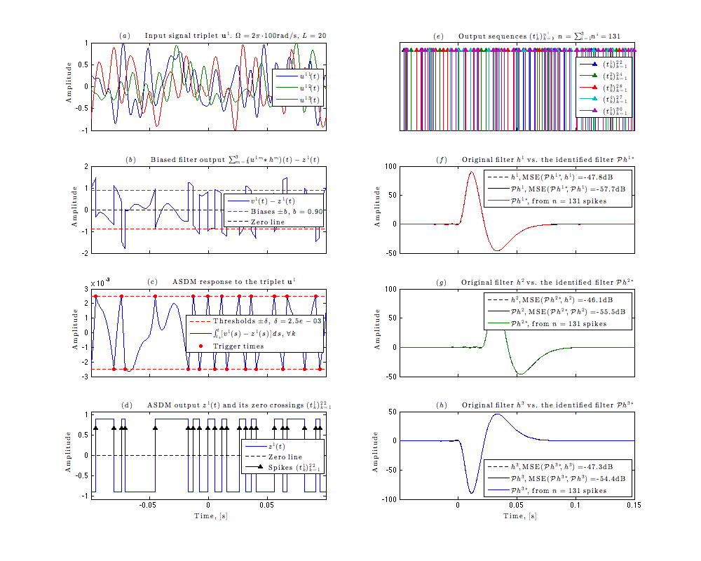
Get running time for Fig.11.
cim_utility.runtime('Running time for Fig. 11: ', toc(tic_fig11));
Running time for Fig. 11: 0' 27.4"
Reproduce Fig.12 of [1]
The channel identification methodology can be generalized and extended to other RKHSs. In particular, we consider the Paley-Wiener space in which functions have finite energy and finite frequency support between [-W, W]. The space of trigonometric polynomials can be considered as a finite dimensional discretization of the Paley-Wiener space. In contrast to functions in the space of trigonometric polynomials, functions in the Paley-Wiener space are not periodic. The convolution is defined over the entire real line.
tic_fig12 = tic; % start the demo timer for Fig. 12
Fix the state of randn() and rand() explicitly to ensure reproducible results.
randn('state', 19871127);
Specify the Ideal IAF neuron.
delta = 0.007; % set the threshold bias = 0.35; % set the bias kappa = 1; % set capacitance
Create the input signal.
dt = 1e-6; % set the time step, [s] t = -0.25:dt:0.15; % set the time course of the input signals f = 100; % set the input signal bandwidth, [Hz] W = 2*pi*f; % calculate the bandwidth in radians Ts = pi/W; % calculate the sampling period n = 5; % set the number of input signals Ns = floor((t(end)-t(1))/Ts); % find the number of signal samples u = zeros(n,length(t)); % allocate a matrix for input signal ukT = randn(Ns, n); % get samples from a Gaussian distribution for i=1:n for k=1:Ns u(i,:) = u(i,:) + ukT(k,i)*sinc(W*(t-t(1)-k*Ts)/pi); % the first sample is zero end u(i,:) = u(i,:)/max(abs(u(i,:))); end
Specify the filter h to be used.
t_filt = -0.05:dt:0.15; % set time course of the filter h = filter(t_filt,T1,T2,a); % get the filter
Compute the filter projection. The reproducing kernel of the Paley-Weiner space is the well-known sinc function. To compute the filter projection correctly, the time course of the sinc kernel is set to two times longer than that of the filter (so that it covers both negative and positive time). The reason to do so is that the sinc kernel is neither causal nor periodic. Due to aperiodicity, the filter projection is computed using the stand convolution rather than the circular convolution.
t_sinc = dt*(-numel(t_filt):numel(t_filt)); % compute the time vector for the sinc kernel K = W/pi*sinc(W*t_sinc/pi); % get the sinc kernel Ph = dt*fftfilt( h, K ); % get the filer projection by convolving h and K Ph = Ph(end-numel(t_filt)+1:end); % get the proper part of the convolution result
Filter the input signals. Because the input signals are all finite, the filter output is not computed correctly at boundaries. Use only that part of the filter output, for which the convolution is computed correctly. The input signals and the time course for input signals are truncated accordingly.
idx = 1+numel(find(t_filt>=0 & t_filt<=0.1)); % find the first index for which the filter output is computed correctly t_simul = t(idx:end); % get the corresponding time course u_simul = u(:,idx:end); % get the corresponding input signals v_simul = zeros(size(u_simul)); % allocate a matrix for filter output for i=1:n v = dt*fftfilt(h(t_filt>=0),u(i,:)); % compute the filter output v_simul(i,:) = v(idx:end); % get the proper part of the filter output end
Encode the filter output v.
s = zeros(n, length(t_simul)); % allocate a matrix for the spike sequence voltage = zeros(n, length(t_simul)); % allocate a matrix for the membrane voltage for i=1:n % encode the output of the filter using an ideal IAF neuron [s(i,:), voltage(i,:)] = ideal_iaf_rt_encode(... v_simul(i,:), t_simul, bias,delta,kappa,'RandomInit',false); end
Identify the filter
tau_1 = -0.025; tau_2 = 0.125; % set a window for faithful identification [h_rec, total_spikes_used] = identify_h_ideal_iaf_trig(t_simul, t_filt,... u_simul, W, Inf, bias, delta, kappa, s, 'Tau', [tau_1 tau_2]);
Number of spikes used: 72
Generate Fig.12 of [1].
figure('Color','White','Position',[0 0 1000 800]); cim_utility.plotPaperFig12(T1,T2,tau_1,tau_2,f,bias,delta,dt,t_filt,h,Ph,... t_simul,u_simul,v_simul,s,voltage,h_rec,total_spikes_used);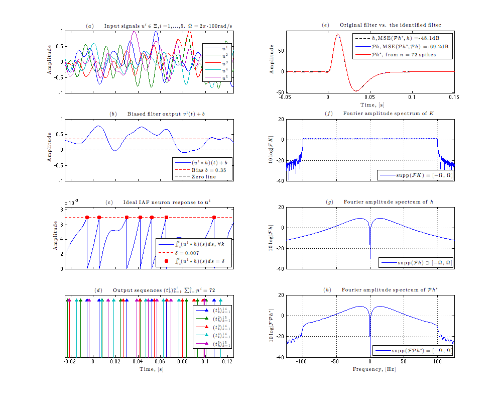
Get running time for Fig.12.
cim_utility.runtime('Running time for Fig. 12: ', toc(tic_fig12));
Running time for Fig. 12: 0' 35.4"
Reproduce Fig.13 of [1]
We revisit what has been shown in Fig. 5 and Fig. 6 in [1], and show that the methodology employed before can be extended within an appropriate mathematical setting to I/O systems with noisy measurements.
tic_fig13 = tic; % start the demo timer for Fig.13
Fix the state of randn() and rand() explicitly to ensure reproducible results.
randn('state', 27111987); rand('state', 19550206);
Specify the Ideal IAF neuron with random thresholds.
delta = 0.005; % set the threshold bias = 0.3; % set the bias kappa = 1; % set the capacitance sigma_delta = 10/100; % set the variance of random thresholds
Generate the input signals.
L = 5; % set the order of the space (number of basis) f = 25; % set the input signal bandwidth, [Hz] W = 2*pi*f; % calculate the bandwidth in radians T = 2*pi*L/W; % calculate the period of the input signal n = 2; % set the number of input signals dt = 1e-5; % set the time step, [s] t = -T/2:dt:T/2; % set the time course of the input signals, [s] u_l = randn(n,2*L+1)+1i*randn(n,2*L+1); % generate random signal coefficients u_l(:,1:L) = conj(u_l(:,end:-1:end-L+1)); % u_{-l} = conj(u_l) u_l(:,L+1) = randn(n,1); % make the DC-term real u = cim_utility.synthesizeSignal(t-t(1),t,u_l,L,T,'Normalize'); % synthesize the input signals
Create the filter and Compute the filter projection.
t_filt = -T/4:dt:T*3/4; % set the time course of the filter, [s] h = filter(t_filt,T1,T2,a); % create the filter K = tri_ker( t_filt-t_filt(1), L, W, T); % compute the reproducing kernel K Ph = dt*cconv(h,K,numel(t_filt)); % find the projection Ph by convolving h with K
Filter the input signals.
v = zeros(size(u)); % allocate a matrix for filter output for i=1:n v(i,:) = dt*cconv(h(t_filt>=0),u(i,:),numel(t)); % convolve each input signal with h end
Encode the filter output.
s = zeros(size(u)); % allocate a matrix for the spike train voltage = zeros(size(u)); % allocate a matrix for the membrane voltage delta_v = cell(n,1); % allocate a vector for random thresholds for i=1:n % encode the output of the filter using an ideal IAF neuron [s(i,:), voltage(i,:), delta_v{i}] = ideal_iaf_rt_encode(... v(i,:), t, bias, delta, kappa, 'DeltaVar',sigma_delta*delta); end
Identify the filter.
[h_rec, total_spikes_used] = identify_h_ideal_iaf_trig(... t, t_filt, u, W, L, bias, delta, kappa, s,'RandomThreshold',true);
Number of spikes needed: 12 Number of spikes used: 26
Generate Fig.13 of [1].
figure('Color','White','Position',[0 0 1000 800]); cim_utility.plotPaperFig(T1,T2,T,f,W,L,bias,delta,sigma_delta,dt,t_filt,... h,Ph,t,u,v,s,voltage,delta_v,h_rec,total_spikes_used);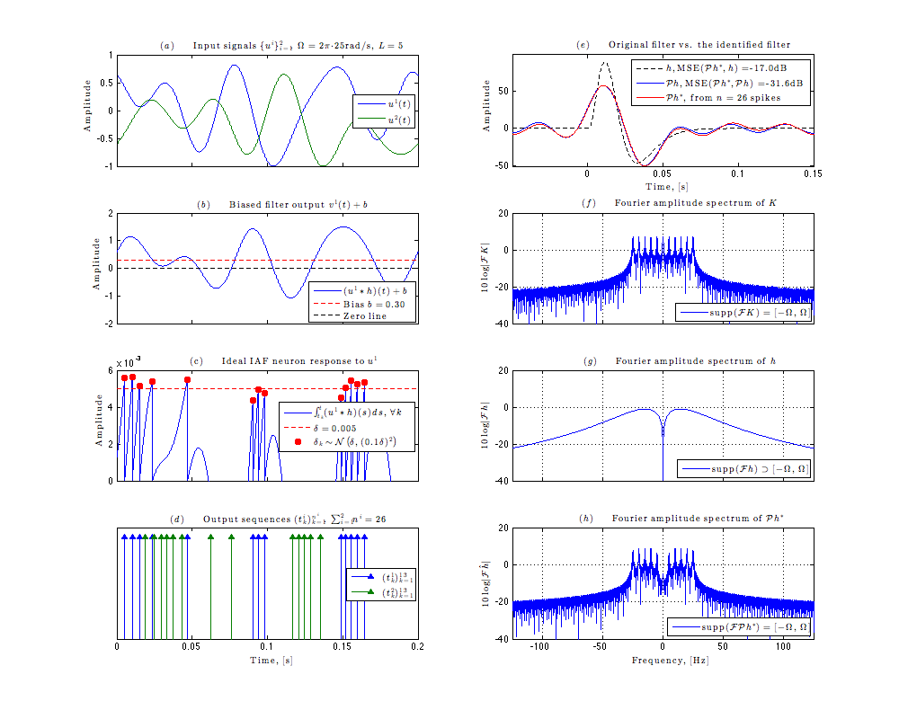
Get running time for Fig.13.
cim_utility.runtime('Running time for Fig. 13: ', toc(tic_fig13));
Running time for Fig. 13: 0' 19.5"
Get demo time.
cim_utility.runtime('Demo Time: ', toc(tic_demo));
Demo Time: 3' 23.6"
Reference
- A. A. Lazar and Y. B. Slutskiy, Channel Identification Machines, Journal of Computational Intelligence and Neuroscience, pp.1-20, vo1. 2012, July, 2012.
- E.H. Adelson and J R. Bergen, Spatiotemporal energy models for the perception of motion, Journal of the Optical Society of America, Vol. 2(2),1985